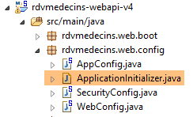
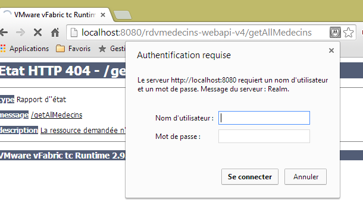
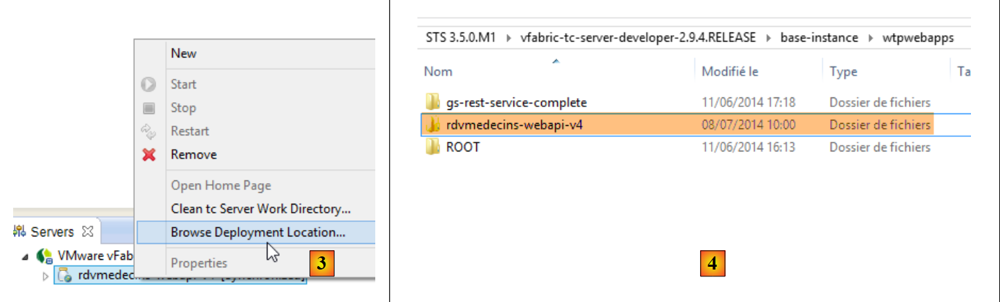
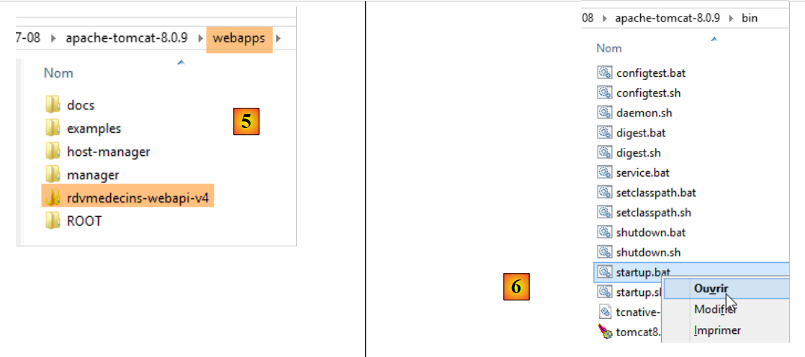
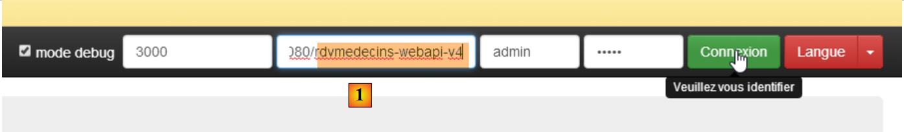
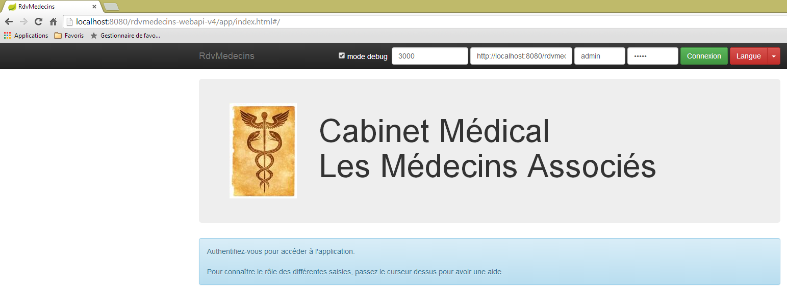
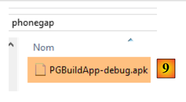
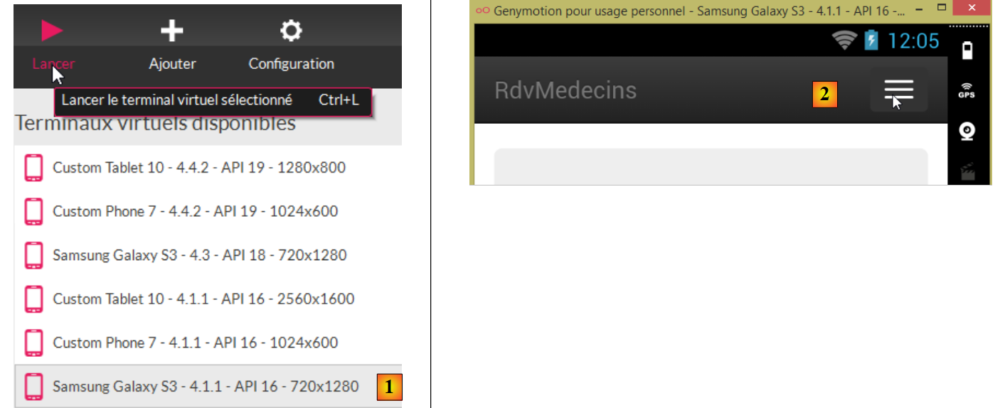
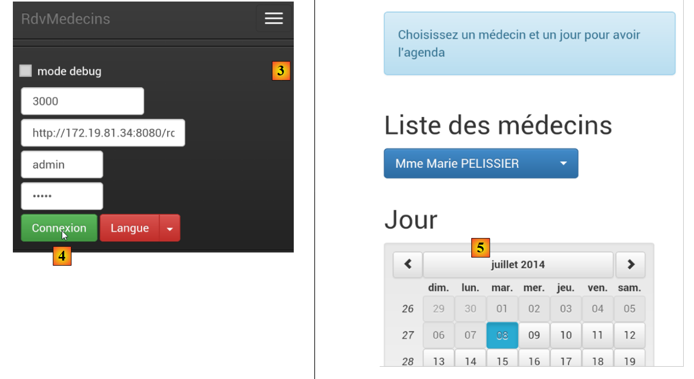

4. Esecuzione dell'applicazione
Ora vogliamo eseguire l'applicazione al di fuori dell'IDE STS (per il server) e di WebStorm (per il client).
4.1. Distribuzione del servizio web su un server Tomcat
Nella Sezione 2.11.9 abbiamo visto come creare un archivio WAR per Tomcat. Ripetiamo qui il processo. Innanzitutto, per preservare la struttura esistente, duplichiamo il progetto Eclipse [rdvmedecins-webapi-v3] in [rdvmedecins-webapi-v4].
 |
Il file [pom.xml] viene modificato come segue:
<modelVersion>4.0.0</modelVersion>
<groupId>istia.st.spring4.mvc</groupId>
<artifactId>rdvmedecins-webapi-v4</artifactId>
<version>0.0.1-SNAPSHOT</version>
<packaging>war</packaging>
<name>rdvmedecins-webapi-v3</name>
<description>Gestion de RV Médecins</description>
<parent>
<groupId>org.springframework.boot</groupId>
<artifactId>spring-boot-starter-parent</artifactId>
<version>1.0.0.RELEASE</version>
</parent>
<dependencies>
<dependency>
<groupId>org.springframework.boot</groupId>
<artifactId>spring-boot-starter-web</artifactId>
</dependency>
<dependency>
<groupId>org.springframework.boot</groupId>
<artifactId>spring-boot-starter-security</artifactId>
</dependency>
<dependency>
<groupId>org.springframework.boot</groupId>
<artifactId>spring-boot-starter-tomcat</artifactId>
<scope>provided</scope>
</dependency>
<dependency>
<groupId>istia.st.spring4.rdvmedecins</groupId>
<artifactId>rdvmedecins-metier-dao-v2</artifactId>
<version>0.0.1-SNAPSHOT</version>
</dependency>
</dependencies>
È necessario apportare modifiche in due punti:
- riga 5: è necessario specificare che si intende generare un file WAR (Web ARchive);
- righe 23–27: è necessario aggiungere una dipendenza dall'artefatto [spring-boot-starter-tomcat]. Questo artefatto include tutte le classi Tomcat nelle dipendenze del progetto;
- riga 26: questo artefatto è [provided], il che significa che i file corrispondenti non saranno inclusi nel WAR generato. Questi file si troveranno invece sul server Tomcat dove verrà eseguita l'applicazione;
È inoltre necessario configurare l'applicazione web. In assenza di un file [web.xml], ciò avviene utilizzando una classe che estende [SpringBootServletInitializer]:
 |
La classe [ApplicationInitializer] è la seguente:
package rdvmedecins.web.config;
import org.springframework.boot.builder.SpringApplicationBuilder;
import org.springframework.boot.context.web.SpringBootServletInitializer;
public class ApplicationInitializer extends SpringBootServletInitializer {
@Override
protected SpringApplicationBuilder configure(SpringApplicationBuilder application) {
return application.sources(AppConfig.class);
}
}
- riga 6: la classe [ApplicationInitializer] estende la classe [SpringBootServletInitializer];
- riga 8: il metodo [configure] viene sovrascritto (riga 7);
- riga 9: la classe [AppConfig] serve a configurare il progetto;
Una volta fatto questo, potrebbe essere necessario aggiornare il progetto Maven (io ho dovuto farlo): [clic destro sul progetto / Maven / Aggiorna progetto] oppure [Alt-F5].
Per eseguire il progetto, procedere come segue:
 |
- in [1], eseguire il progetto su uno dei server registrati nell'IDE Eclipse;
- In [2], selezionare [tc Server Developer], che è l'opzione predefinita. Si tratta di una variante di Tomcat;
Si ottiene il seguente risultato:
 |
È normale. Ricorda che il servizio web non include l'URL [/] nei suoi metodi. Quando provi l'URL [/getAllMedecins], ottieni la seguente risposta:
 |
Questo è normale. Il servizio web è protetto.
Ora avviamo il client [rdvmedecins-angular-v2] in WebStorm:
 |
In [1], inseriamo l'URL del nuovo servizio web [http://localhost:8080/rdvmedecins-webapi-v4]. Otteniamo il seguente risultato:

Per eseguire l'applicazione al di fuori dell'IDE STS, esistono diverse soluzioni. Eccone una.
Scaricare una versione di Tomcat [http://tomcat.apache.org/download-80.cgi] (luglio 2014):
 |
Seleziona una versione compressa in [1] e decomprimila in [2]. Torna a STS:
 |
- Nella scheda [Servers], fare clic con il tasto destro sull'applicazione [rdvmedecins-webapi-v4] e selezionare l'opzione [Browse Deployment Location];
- in [4]: copiare la cartella [rdvmedecins-webapi-v4];
 |
- in [5], incolla la cartella [rdvmedecins-webapi-v4] nella cartella [webapps] di Tomcat;
- In [6], eseguire il file di comando [startup.bat] (il server Tomcat integrato in STS deve essere arrestato). Si aprirà una finestra DOS per visualizzare i log di Tomcat. Questi dovrebbero indicare che l'applicazione [rdvmedecins-webapi-v4] è stata avviata.
Per verificarlo, eseguire nuovamente il client Angular [rdvmedecins-angular-v2] in WebStorm:
 |
In [1], inserisci l'URL del nuovo servizio web [http://localhost:8080/rdvmedecins-webapi-v4]. Vedrai il seguente risultato:
4.2. Distribuzione del client Angular sul server Tomcat
Ora che il servizio web è stato distribuito su Tomcat, distribuiremo anche il client Angular su un server. Questo potrebbe benissimo essere il server che sta già ospitando il servizio web. Adotteremo questo approccio.
Per prima cosa, duplichiamo il client [rdvmedecins-angular-v2] in [rdvmedecins-angular-v3] e apportiamo le seguenti modifiche:
 |
- in [1], tutto è stato spostato in una cartella denominata [ app];
- in [1], abbiamo rimosso la cartella [bower-components], che conteneva le varie librerie CSS e JS necessarie per il progetto. Tutti questi elementi sono stati copiati nella cartella [lib] [2];
- in [1], il file [app.html] è stato rinominato [index.html];
Il file [index.html] è stato modificato per tenere conto delle modifiche nei percorsi delle risorse utilizzate:
<!DOCTYPE html>
<html ng-app="rdvmedecins">
<head>
<title>RdvMedecins</title>
...
<!-- on CSS -->
...
<link href="lib/bootstrap-theme.min.css" rel="stylesheet"/>
<link href="lib/bootstrap-select.min.css" rel="stylesheet"/>
</head>
<!-- controller [appCtrl], model [app] -->
<body ng-controller="appCtrl">
<div class="container">
...
</div>
<!-- Bootstrap core JavaScript ================================================== -->
<script type="text/javascript" src="lib/jquery.min.js"></script>
<script type="text/javascript" src="lib/bootstrap.min.js"></script>
<script type="text/javascript" src="lib/bootstrap-select.min.js"></script>
<script type="text/javascript" src="lib/footable.js"></script>
<!-- angular js -->
<script type="text/javascript" src="lib/angular.min.js"></script>
<script type="text/javascript" src="lib/ui-bootstrap-tpls.min.js"></script>
<script type="text/javascript" src="lib/angular-route.min.js"></script>
<script type="text/javascript" src="lib/angular-translate.min.js"></script>
<script type="text/javascript" src="lib/angular-base64.min.js"></script>
<!-- modules -->
...
<!-- services -->
...
<!-- guidelines -->
...
<!-- controllers -->
....
</body>
</html>
Inoltre, il controller [loginCtrl] è stato modificato per puntare al server corretto, in modo che l'utente non debba digitare l'URL:
// credentials
app.serverUrl = "http://localhost:8080/rdvmedecins-webapi-v4";
app.username = "admin";
app.password = "admin";
Ora che abbiamo finito, eseguiamo il file [index.html]:
 |  |
Quindi accediamo al servizio web. Dovrebbe funzionare. Una volta verificato, fermiamo il server Tomcat. Riutilizzeremo il server STS integrato.
In STS, copiare l'intero contenuto della cartella [rdvmedecins-angular-v3/app] nella cartella [webapp] del progetto [rdvmedecins-webapi-v4] (scheda Navigator) [1]:
 |
Una volta fatto ciò, avvia [2] il server VMware di STS, quindi richiedi l'URL [http://localhost:8080/rdvmedecins-webapi-v4/app/index.html]:
 |
Incontriamo un problema di autorizzazioni al punto [3]. Ciò non sorprende, dato che abbiamo protetto il servizio web. Dobbiamo specificare che l'accesso al file [/app/index.html] non è soggetto a restrizioni. Torniamo a Eclipse:
 |
Ricordiamo che i permessi di accesso sono stati definiti nella classe [SecurityConfig]. Modifichiamola come segue:
@Override
protected void configure(HttpSecurity http) throws Exception {
// CSRF
http.csrf().disable();
// the password is transmitted by the header Authorization: Basic xxxx
http.httpBasic();
// the HTTP OPTIONS method must be authorized for all
http.authorizeRequests() //
.antMatchers(HttpMethod.OPTIONS, "/", "/**").permitAll();
// the [app] folder is accessible to all
http.authorizeRequests() //
.antMatchers(HttpMethod.GET, "/app", "/app/**").permitAll();
// only the ADMIN role can use the application
http.authorizeRequests() //
.antMatchers("/", "/**") // all URL
.hasRole("ADMIN");
}
- Righe 11–12: Concediamo a tutti il permesso di leggere la cartella [app] e il suo contenuto. Per farlo, seguiamo l'esempio fornito dalle righe precedenti.
Ora, riavvia il server Tomcat di STS e richiedi nuovamente l'URL [http://localhost:8080/rdvmedecins-webapi-v4/app/index.html]:

Questa volta funziona.
4.3. Intestazioni CORS
Ricorderai che abbiamo faticato non poco a gestire le intestazioni CORS. Nell'esempio precedente:
- il servizio web si trova all'URL [http://localhost:8080/rdvmedecins-webapi-v4];
- il client HTML si trova all'URL [http://localhost:8080/rdvmedecins-webapi-v4/app];
Il client HTML e il servizio web si trovano quindi sullo stesso server [http://localhost:8080]. Non ci sono conflitti CORS perché questi si verificano solo quando il client e il server non si trovano nello stesso dominio. Dovremmo essere in grado di verificarlo. Torniamo a STS:
 |
La generazione o meno delle intestazioni CORS è controllata da un valore booleano definito nella classe [ApplicationModel]:
// données de configuration
private boolean CORSneeded = true;
Impostiamo il valore booleano sopra indicato su false, riavviamo il servizio web e richiediamo nuovamente l'URL [http://localhost:8080/rdvmedecins-webapi-v4/app/index.html]. Possiamo vedere che l'applicazione funziona.
4.4. Distribuzione del client Angular su un tablet Android
Lo strumento [Phonegap] [http://phonegap.com/] consente di generare un eseguibile mobile (Android, iOS, Windows 8, ecc.) da un'applicazione HTML/JS/CSS. Esistono diversi modi per ottenere questo risultato. Useremo quello più semplice: uno strumento online disponibile sul sito web di Phonegap [http://build.phonegap.com/apps].
 |
- Prima di [1], potrebbe essere necessario creare un account;
- In [1], iniziare;
- In [2], scegli un piano gratuito che consenta di utilizzare una sola app Phonegap;
 |
- In [3], scaricare l'applicazione compressa [4] (la cartella [app] creata nella sezione 4.2 è stata compressa);
 |
- In [5], assegnare un nome all'app;
- in [6], compilare l'applicazione. L'operazione potrebbe richiedere 1 minuto. Attendere fino a quando le icone delle varie piattaforme mobili indicano che la compilazione è completa;
 |
- Sono stati generati solo i file binari per Android [7] e Windows [8];
- fare clic su [7] per scaricare il file binario per Android;
 |
- in [9], il file binario [apk] scaricato;
Avviare un emulatore [GenyMotion] per tablet Android (vedere la sezione 6.4):
 |
Sopra, avviamo un emulatore di tablet con API Android 16. Una volta avviato l'emulatore,
- sbloccarlo trascinando il lucchetto (se presente) di lato e poi rilasciandolo;
- Con il mouse, trascinate il file [PGBuildApp-debug.apk] che avete scaricato e rilasciatelo sull'emulatore. Verrà quindi installato ed eseguito;
 |
È necessario modificare l'URL in [1]. Per farlo, in una finestra del prompt dei comandi, digitare il comando [ipconfig] (riga 1 qui sotto), che visualizzerà i vari indirizzi IP del computer:
C:\Users\Serge Tahé>ipconfig
Configuration IP de Windows
Carte réseau sans fil Connexion au réseau local* 15 :
Statut du média. . . . . . . . . . . . : Média déconnecté
Suffixe DNS propre à la connexion. . . :
Carte Ethernet Connexion au réseau local :
Suffixe DNS propre à la connexion. . . : ad.univ-angers.fr
Adresse IPv6 de liaison locale. . . . .: fe80::698b:455a:925:6b13%4
Adresse IPv4. . . . . . . . . . . . . .: 172.19.81.34
Masque de sous-réseau. . . . . . . . . : 255.255.0.0
Passerelle par défaut. . . . . . . . . : 172.19.0.254
Carte réseau sans fil Wi-Fi :
Statut du média. . . . . . . . . . . . : Média déconnecté
Suffixe DNS propre à la connexion. . . :
...
Annotare l'indirizzo IP Wi-Fi (righe 6–9) o l'indirizzo IP della rete locale (righe 11–17). Quindi utilizzare questo indirizzo IP nell'URL del server web:
 |
Una volta fatto ciò, connettiti al servizio web:
 |
Prova l'applicazione sull'emulatore. Dovrebbe funzionare. Sul lato server, puoi scegliere se consentire o meno le intestazioni CORS nella classe [ApplicationModel]:
// données de configuration
private boolean CORSneeded = false;
Questo non è rilevante per l'app Android. Non viene eseguita in un browser. Il requisito dell'intestazione CORS proviene dal browser, non dal server.
4.5. Distribuzione del client Angular su un emulatore di smartphone Android
Ripetiamo il passaggio precedente utilizzando un emulatore di smartphone. Vogliamo verificare come si comporta il nostro client su schermi di piccole dimensioni:
 |
- in [1], avviamo un emulatore di smartphone;
- in [2] e [3], la barra di navigazione è stata ridotta a un menu;
 |
- in [4], effettuiamo l'accesso;
- in [5], l'elenco e il calendario sono disposti uno sotto l'altro anziché affiancati;
 |
- in [6], richiediamo il calendario;
- in [7], poiché lo schermo è troppo piccolo, parte delle fasce orarie è nascosta. La libreria [footable] ha gestito questo aspetto;
 |
- in [8], la stessa vista di prima, ma questa volta con un appuntamento.
Tutto sommato, la nostra app si adatta abbastanza bene allo smartphone. Potrebbe sicuramente essere migliore, ma rimane comunque utilizzabile.